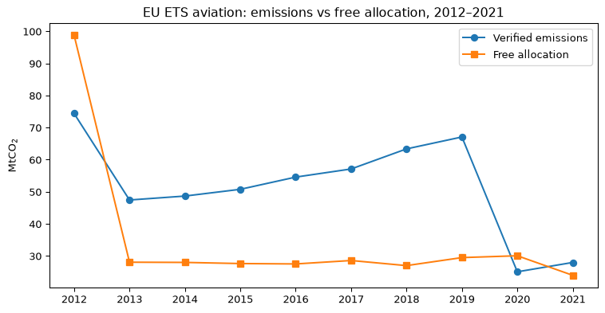

| verified_tco2 | free_allocation_tco2 | |
|---|---|---|
| year | ||
| 2012 | 74.4 | 98.8 |
| 2013 | 47.4 | 28.0 |
| 2014 | 48.6 | 28.0 |
| 2015 | 50.8 | 27.6 |
| 2016 | 54.6 | 27.5 |
| 2017 | 57.1 | 28.6 |
| 2018 | 63.4 | 27.0 |
| 2019 | 67.1 | 29.5 |
| 2020 | 25.0 | 30.0 |
| 2021 | 28.0 | 23.9 |
EU ETS aviation: emissions vs free allocation, 2012–2021
Data: EEA extract of the Union Registry (EUTL), activity 10 (aviation), one row per administering member state per year. verified_tco2 = verified emissions of aircraft operators; free_allocation_tco2 = freely issued entitlements (total allocation minus auctioned allowances). Rows are per administering country — operator nationality does not determine which country’s aviation total an operator’s emissions appear under, and the EEA does not publish an operator-level attribution to member states. Full provenance: data/EUTL_PROVENANCE.md.
Two regimes are visible. In 2012 aircraft operators could comply using entitlements calculated on the full scope (all flights to/from EEA airports), and free allocation (~67 Mt) exceeded what the reduced 2013–2020 scope would later recognise. From 2013 onwards the benchmark was fixed at 82 % of historical (2004–06) emissions, with 15 % auctioned — free allocation sits at ~31 Mt against verified emissions that recovered from ~53 Mt (2013, reduced scope) to ~68 Mt (2019).

The 2020 collapse (−63 % vs 2019) reflects COVID-19; operators nonetheless received their full free allocation for 2020, widening the surplus. In 2021 the scheme entered its third trading period rules for aviation: free allocation cut to 50 % of 2019 benchmark emissions and non-EEA flights excluded (UK carriers report under the UK ETS from 2021), bringing free allocation down to ~24 Mt — below 2019 verified emissions for the first time outside 2012.
| Verified emissions (tCO2) | Free allocation (tCO2) | |
|---|---|---|
| member_state | ||
| IE | 5293047 | 4057799 |
| DE | 4690705 | 3369767 |
| ES | 3354009 | 2624084 |
| FR | 2262074 | 1812702 |
| NL | 1651252 | 1219395 |
| AT | 1615585 | 2279760 |
| HU | 1228309 | 608784 |
| IT | 1080710 | 1569582 |
| SE | 1050735 | 1462582 |
| BE | 745064 | 492640 |